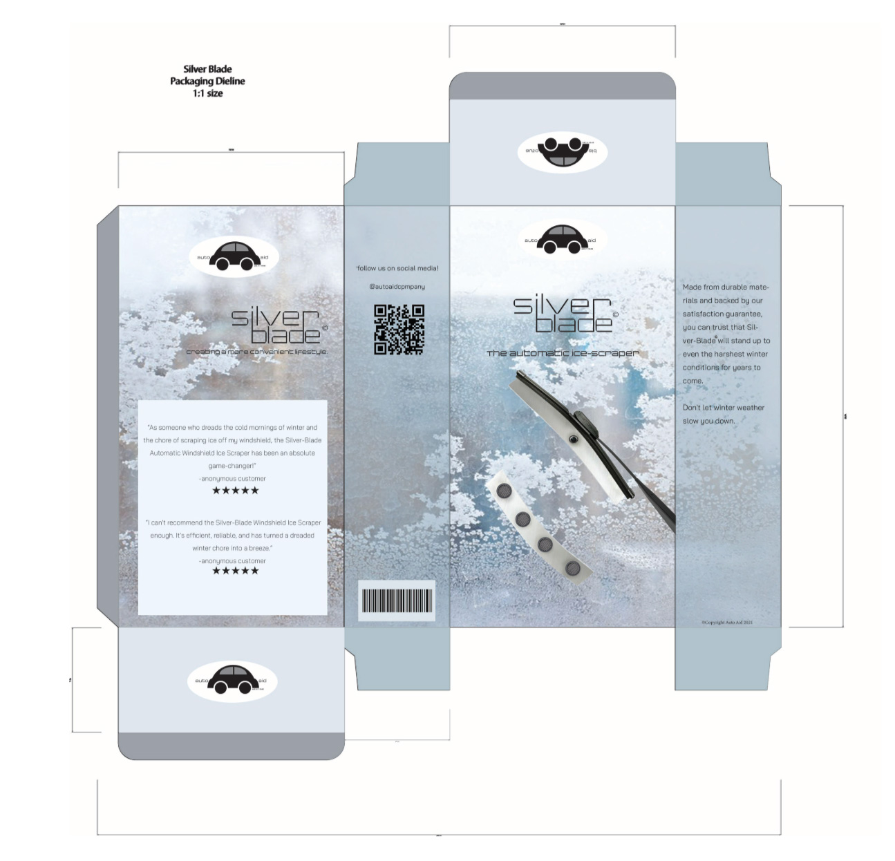

⋆˙⟡Silver Blade


A brochure mockup created in Adobe Procreate for a theoretical product called 'Silver Blade.' Silver Blade is an attachable, automatic windshield wiper with a built-in heating system that senses harsh weather conditions, removing ice and snow in seconds.
"The built-in heaters featured on the bottom of the blade work to defrost your car as quick as possible, while also allowing the blades to never freeze over. This product is also incredibly user-friendly and easy to equip, by just attaching to your windshield wipers in seconds, allowing you to use this product depending on the time of year. Not only this, but Silver Blade ensures safety on roads, ensuring clear vision in even the harshest of weather conditions. Don't let winter slow you down – equip yourself with Silver Blade and breeze through those chilly mornings."